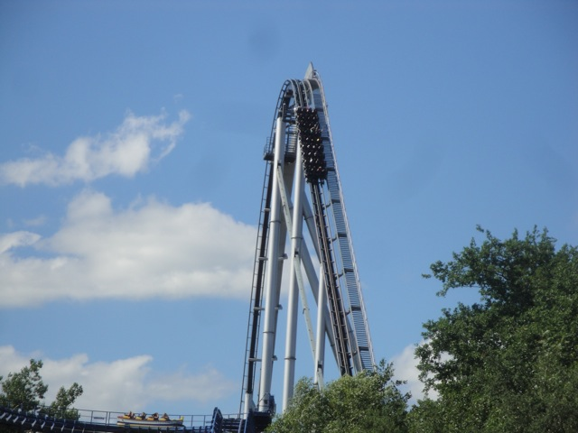
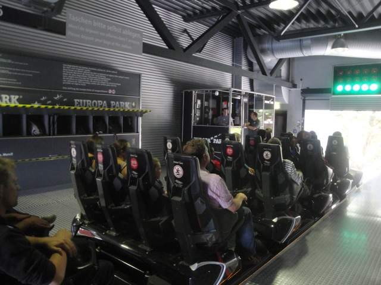
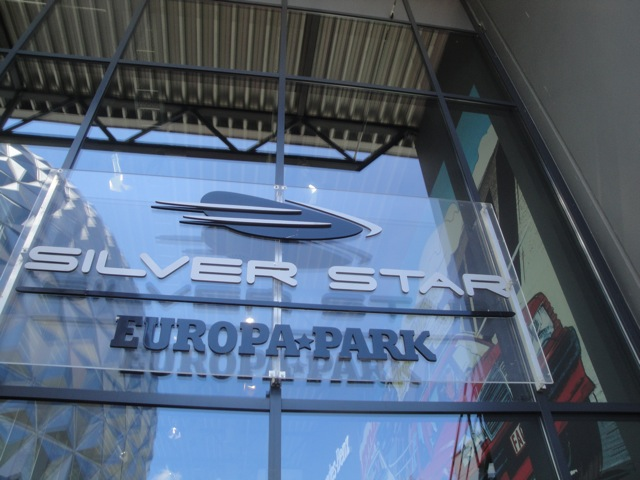

| |
Silver Star Review

We're here at Europa Park. Today's ride we'll be reviewing for you is Silver Star. Not my favorite Europa Park coaster, but it's a really fun ride. You get in the car and pull down the clamshell lap bar. Now clamshells are awesome as you have a lot of freedom. But trust me. They keep you in. You then begin to climb the lifthill. Higher and Higher you go. The view may suck and be of just German farmlands, but hey. Its Europa Park. You can forgive them. And besides, we've reached the top. Let's just lean in and dive down the first drop. We plummet down to the ground, pass the road and gain a TON of speed. It's a lot of fun. We then twist a little to the left and head up into a big floater air hill, and it does provide some good floater air. It's not amazing or anything, but I'm enjoying it, and my ass is out of the seat. We then rise up another airtime hill, but unfortunetly, there's something here. Yep. Trim brake. Grr. God Damn It!!! While it's not as bad as the HORRENDOUS trim on Raging Bull, but it does kill the airtime we would've had on this airtime hill. Regardless of how weak it would've been. We then go into this turnaround. Again, it's not crazy, but I had fun on it. There's a little bit of laterals and it's just a fun element. I'm having fun here. We then head down the next set of airtime hills. Apparently there's a trim here, but it was turned off when I was there. And WEE!!! Mild Floater Air. We get a good look at the Europa Park parking lot as we rise up, get a little more floater air, and head into a midcourse brake run. As if this ride needed one, but hey. It's pretty weak and we drop back down with some decent speed. So that's some good news. We head into an upward helix, which is fairly strong and definety a lot of fun. We go through two more airtime hills. You know the drill. Mild Floater Air. Mild Floater Air. Wee! =) And here comes by far, my favorite part of the ride. An S Curve that seriously starts to get mean and agressive. There's some serious whip and laterals to this thing. And I like that. Silver Star is finally starting to bite! That's the good news. The bad news is that the ride is now over. Aww, and right when it was starting to get good. =( And yeah, Silver Star is definetly my least favorite B&M Hyper, but I still like it. It kind of reminds me of Goliath @ La Ronde, except without the ejector air pop and the sideways hill. But even as my least favorite B&M Hyper, I still found it to be a fun ride that's worth a ride when at Europa Park.
8/10
Location: Europa Park
Opened: 2002
Built by: B&M
Last Ridden: June 25, 2012
Silver Star Photos


Home
|